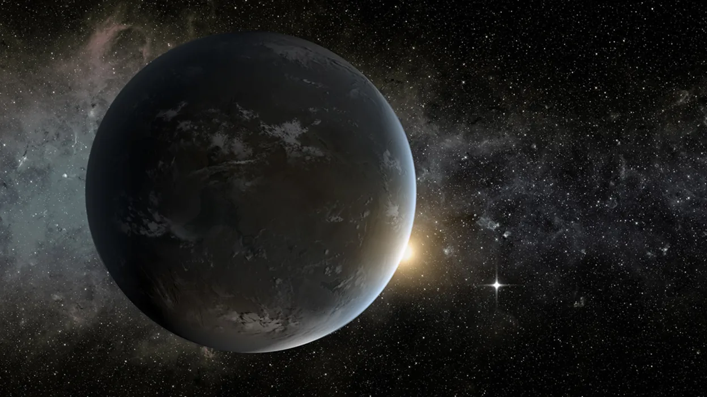

TOI-332b
-

yeni gezegen
TOI-332b olarak adlandırılan bu gezegenin fiziksel özellikleri ve yıldızına olan yörüngesel uzaklığını mevcut gezegenlerin oluşum teorisiyle açıklamak epey zor. İngiltere'deki Warwick Üniversitesi'nden astrofizikçi Ares Osborn liderliğindeki bir ekip alışılmadık derecede yüksek yoğunluğa sahip ve ultra kısa periyotlu bir gezegen olan TOI-332b hakkında bir çalışma yayınladı. Çalışmada “TOI-332b, mevcut Neptün Çölü keşiflerimize çok ilginç bir katkı sağlıyor ve gezegen oluşumu teorisini doğrulamak için örnek bir olay” ifadeleri yer alıyor. İnsanlık bugüne kadar 5 bin 500'den fazla ötegezegen keşfetti ve bazı gerçekten çok ilginç. Neden bazı gezegen türlerinden çok sayıda, diğerlerinden ise nadiren bulduğumuzu anlamak, gezegen sistemlerinin nasıl oluştuğu ve evrim geçirdiği konusunda bir ipucu olabilir.
-
öne çıkanlar
 6, 2023
6, 2023
-
yakın zamanda olanlar
-

yabancı yasam
3, 2023 -

GALAXY
1, 2023
-